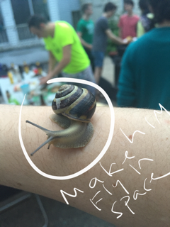

Every part of every scene is a decision...
What do you notice about the storyboards?
What do they include?
If you were making animations, what would you include?

Making storyboards
1. Sketch with pen on real paper (squares with images in them and effects you want to add)!
2. Sketch in Paper like the orange project storyboard
3. Use your photos:
Ipad -> import into Paper App--> Add writing/drawing